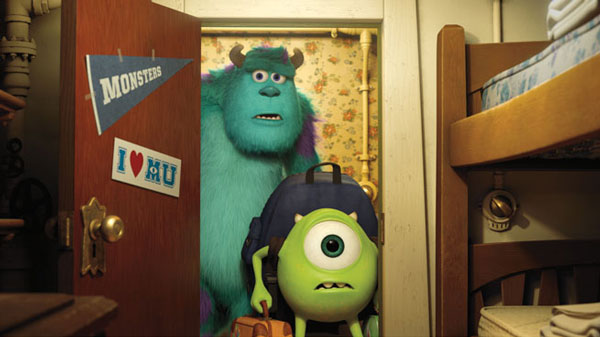

I nostri corsi
Scopri i percorsi in Spavento e Ingegneria dello Spavento, pensati per tutti i livelli.
Vedi i corsi →
Scopri i percorsi in Spavento e Ingegneria dello Spavento, pensati per tutti i livelli.
Vedi i corsi →
Fai il quiz e scopri il percorso alla Monsters Un. fatto su misura per te!
Fai il quiz →Tour guidati e mappe per raggiungere la nostra storica facciata e gli spazi prova.
Come arrivare →Dalle aule storiche ai moderni laboratori di Scaring Engineering, la Monsters University è il luogo dove tecnica e creatività si uniscono per formare i migliori specialisti dello spavento.
Fondata come Accademia degli Arcani Spaventi, l'Università ha saputo evolversi mantenendo salde tradizioni pratiche: lezioni dal vivo, esercitazioni sul campo e progetti interdisciplinari che integrano performance e tecnologia.